Explorando a Especiaria Dourada: Um Toque de Qualidade na nossa Culinária
Nossa busca incansável por comida de qualidade nos leva a descobrir os segredos e as maravilhas das
especiarias. Entre elas, destaca-se a misteriosa Especiaria Dourada, com sua tonalidade brilhante e sabor
excepcional. Neste artigo, embarcaremos em uma jornada culinária que nos levará a explorar as profundezas
dessa especiaria e seu papel fundamental na criação de experiências gastronômicas excepcionais.
Ao longo de quatro partes, mergulharemos na magia da Especiaria Dourada, revelando seus segredos,
explorando suas harmonizações com sabores diversos e desvendando suas propriedades benéficas para a saúde.
De pratos clássicos a receitas criativas, descobriremos como essa especiaria transforma cada refeição em uma
obra-prima de qualidade.
Prepare-se para uma jornada sensorial e gastronômica única enquanto exploramos a Especiaria Dourada e sua
influência na busca incessante por comida de qualidade em nossas mesas.
As especiarias e Comida de Qualidade
O Papel das Especiarias na Criação de Comida de Qualidade
Comida de qualidade é uma busca constante para aqueles que apreciam o prazer de uma refeição excepcional.
É uma experiência que envolve todos os sentidos, da visão ao paladar, e é enriquecida por um elemento
essencial: as especiarias.
As especiarias são um tesouro na culinária, conferindo sabores, aromas e cores únicos aos pratos. Mais do que
simples ingredientes, elas são os pilares da comida de qualidade. Nesta jornada pela culinária e saúde,
exploraremos o profundo relacionamento entre as especiarias e o conceito de comida de qualidade.
O Que São Especiarias?
Antes de mergulharmos mais fundo, é importante compreender o que são especiarias. Em termos simples,
especiarias são substâncias vegetais que provêm de diferentes partes de plantas, como sementes, cascas, raízes,
folhas, flores e frutos. Elas são utilizadas na culinária há séculos para adicionar sabor e aroma aos alimentos.
A Diversidade das Especiarias
Uma das características mais fascinantes das especiarias é a sua diversidade. Cada cultura ao redor do mundo
possui suas próprias especiarias distintas, criando uma riqueza de opções para chefs e cozinheiros caseiros.
Desde o pungente curry indiano até o picante chipotle mexicano e o suave açafrão espanhol, as especiarias
oferecem uma ampla gama de sabores.
Especiarias e a Busca por Comida de Qualidade
Comida de qualidade é um conceito que vai além do simples ato de comer. Envolve a busca por pratos que não
apenas satisfazem a fome, mas também proporcionam uma experiência sensorial única. As especiarias
desempenham um papel fundamental nessa busca, permitindo que os chefs elevem o sabor de seus pratos
a um nível superior.
Exploraremos como as especiarias contribuem para a complexidade dos sabores na comida de qualidade
e como podem ser usadas para criar pratos excepcionais que deixam uma impressão duradoura nos paladares
mais exigentes. Junte-se a nós nesta jornada culinária e descubra como as especiarias se tornam aliadas na busca
por uma comida de qualidade excepcional.
Harmonizando Sabores com a Especiaria Dourada
Uma das características mais notáveis da Especiaria Dourada é sua capacidade de harmonizar sabores.
Seu perfil de sabor equilibrado pode realçar tanto pratos doces quanto salgados. É a especiaria perfeita para
criar uma sinfonia de sabores em nossas refeições.
Pratos Clássicos com Toque Dourado
A Especiaria Dourada pode ser usada em uma variedade de pratos clássicos e contemporâneos. Alguns chefs
renomados a utilizam para criar pratos icônicos, como o "Risoto Dourado" e o "Frango ao Curry Dourado."
O toque dourado adiciona uma dimensão única a esses pratos, tornando-os verdadeiras obras de arte culinária.
Segredos de Combinação
A chave para desbloquear todo o potencial da Especiaria Dourada está em sua combinação com outros
ingredientes. Ela se destaca quando combinada com ervas frescas, como manjericão e coentro, criando uma
explosão de sabor. Além disso, seu uso em marinadas e molhos confere um caráter exclusivo aos pratos.
A Experiência Sensorial
Comida de qualidade é uma experiência que envolve todos os sentidos. A Especiaria Dourada não apenas
acrescenta sabor, mas também aroma e cor aos pratos. Ao contemplar um prato com Especiaria Dourada,
somos convidados a uma jornada sensorial que aguça nossos sentidos e nos faz apreciar cada detalhe.
Nesta parte, mergulhamos mais fundo no mundo da Especiaria Dourada e como ela pode ser usada para criar
pratos excepcionais. Continuaremos nossa exploração culinária, revelando receitas exclusivas que destacam a
Especiaria Dourada como o ingrediente principal. Prepare-se para descobrir como sua comida pode ser
transformada em verdadeiras obras-primas de qualidade.
Receitas que Brilham com a Especiaria Dourada
Nas partes anteriores, exploramos a Especiaria Dourada e seu incrível poder de transformar pratos em
experiências gastronômicas extraordinárias. Agora, chegou a hora de mergulhar em receitas que colocam em
prática o potencial dessa especiaria dourada.
Risoto Dourado de Legumes Frescos
Começamos com uma receita que combina a cremosidade do risoto com a riqueza da Especiaria Dourada.
Prepare-se para um prato que é um verdadeiro festival de sabores. Aqui está o que você vai precisar:
Ingredientes:
- 1 xícara de arroz arbóreo
- 2 xícaras de caldo de legumes
- 1 cebola picada
- 1 abobrinha cortada em cubos
- 1 cenoura ralada
- 1 colher de chá de Especiaria Dourada
- Sal e pimenta a gosto
- Azeite de oliva
- Queijo parmesão ralado
Modo de Preparo:
- Em uma panela, aqueça o azeite e refogue a cebola até ficar dourada.
- Adicione o arroz e mexa por alguns minutos até que ele fique transparente.
- Acrescente a Especiaria Dourada e misture bem.
- Adicione o caldo de legumes aos poucos, mexendo sempre, até que o arroz esteja cozido e cremoso.
- Adicione a abobrinha e a cenoura e cozinhe por mais alguns minutos.
- Tempere com sal e pimenta a gosto.
- Sirva com queijo parmesão ralado por cima.
Frango ao Curry Dourado
Esta receita combina a Especiaria Dourada com o calor do curry para criar um prato incrivelmente saboroso.
Aqui estão os ingredientes e o modo de preparo:
Ingredientes:
- Peitos de frango cortados em cubos
- 1 cebola picada
- 2 colheres de chá de Especiaria Dourada
- 2 colheres de chá de curry em pó
- 1 lata de leite de coco
- Sal e pimenta a gosto
- Azeite de oliva
Modo de Preparo:
- Em uma panela, aqueça o azeite e refogue a cebola até ficar macia.
- Adicione os cubos de frango e cozinhe até que estejam dourados.
- Tempere com a Especiaria Dourada, o curry em pó, sal e pimenta.
- Despeje o leite de coco na panela e deixe ferver.
- Reduza o fogo e cozinhe por mais alguns minutos até que o frango esteja cozido e o molho tenha engrossado.
- Sirva com arroz ou naan.
Aqui, exploramos duas receitas que destacam a Especiaria Dourada como ingrediente principal. Esses pratos
exemplificam como a especiaria pode elevar a qualidade da comida, transformando refeições simples em
experiências gastronômicas excepcionais. Na próxima seção
Especiaria Dourada: Um Toque de Saúde e Qualidade
Nas partes anteriores, exploramos a Especiaria Dourada e sua capacidade de transformar pratos em
experiências culinárias excepcionais. Agora, é hora de descobrir os benefícios para a saúde que essa especiaria
dourada pode oferecer.
Uma Explosão de Antioxidantes
A Especiaria Dourada é conhecida por ser uma rica fonte de antioxidantes naturais. Esses compostos ajudam a
proteger nossas células dos danos causados pelos radicais livres, contribuindo para uma vida mais saudável.
Além disso, os antioxidantes podem melhorar a saúde da pele e do sistema imunológico.
Digestão Aprimorada
Outro benefício notável da Especiaria Dourada é seu impacto positivo na digestão. Ela estimula a produção de
enzimas digestivas, auxiliando na quebra eficiente dos alimentos. Isso não apenas promove uma digestão
saudável, mas também reduz a sensação de inchaço após as refeições.
Bem-Estar Geral
O consumo moderado de Especiaria Dourada também tem sido associado a melhorias no bem-estar geral.
Algumas pessoas relatam sentir um aumento na energia e no ânimo após a inclusão dessa especiaria em suas
dietas. Ela pode ajudar a reduzir a fadiga e aumentar a vitalidade.
Integrando a Especiaria Dourada em sua Alimentação
Para colher os benefícios da Especiaria Dourada, você pode incorporá-la em diversas formas à sua dieta.
Além das receitas mencionadas anteriormente, você pode adicionar uma pitada de Especiaria Dourada a sopas,
ensopados, smoothies e até mesmo chás. Sua versatilidade a torna uma adição valiosa a qualquer plano de
alimentação saudável.
Assim, exploramos os benefícios para a saúde que a Especiaria Dourada oferece, destacando sua contribuição
para uma vida mais saudável e equilibrada. Esperamos que esta jornada pela culinária e saúde tenha inspirado
você
a explorar novos sabores e a buscar sempre comida de qualidade em sua mesa. Lembre-se, a culinária é uma arte
que nos permite apreciar a vida de maneira única.
 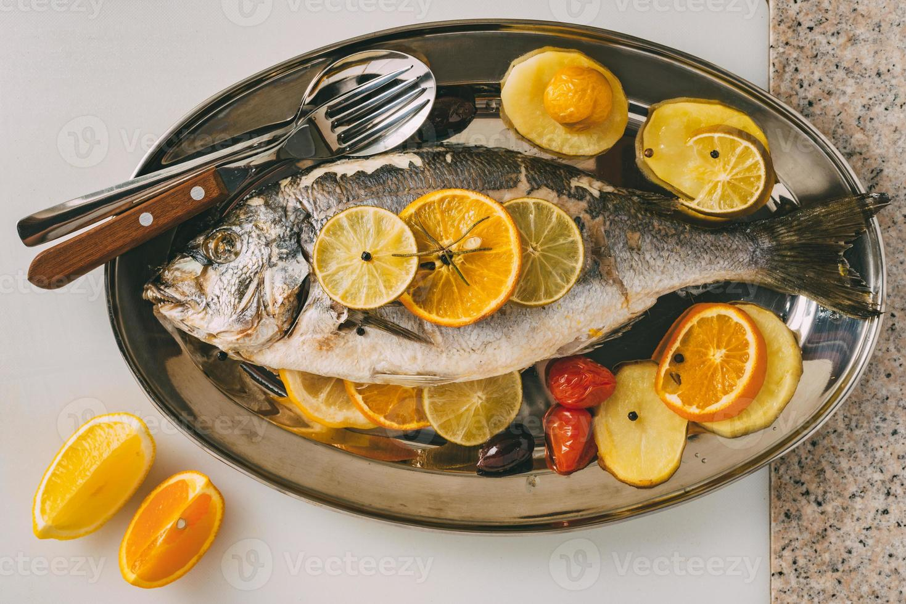
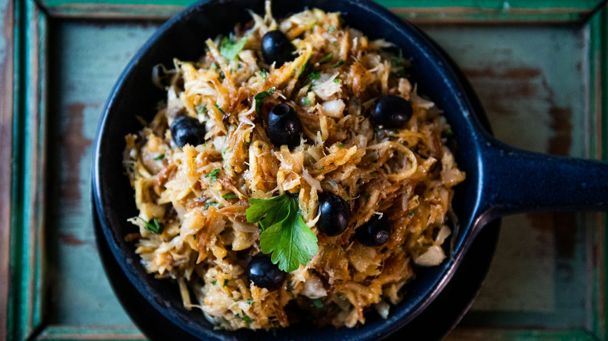
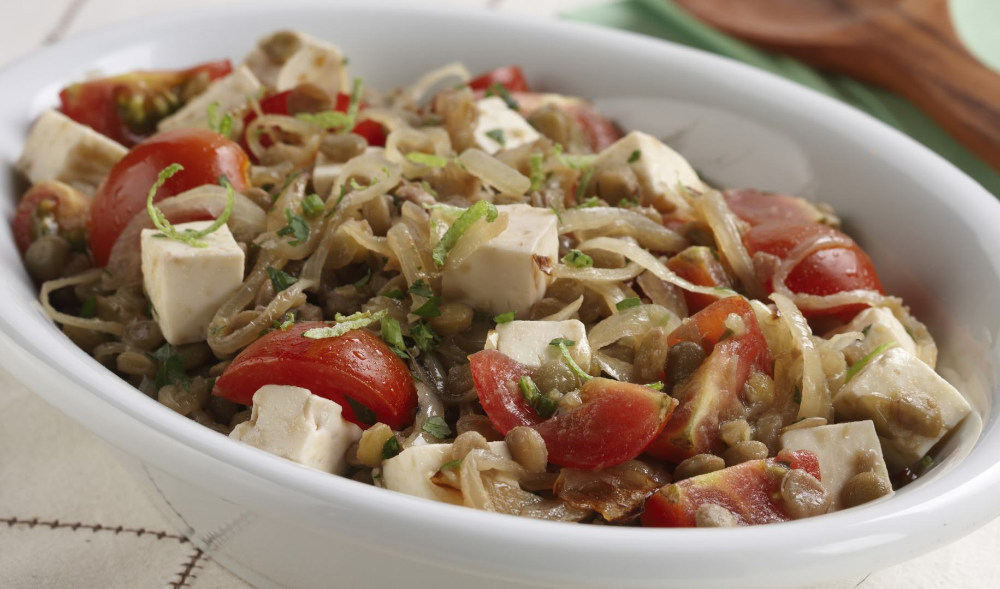
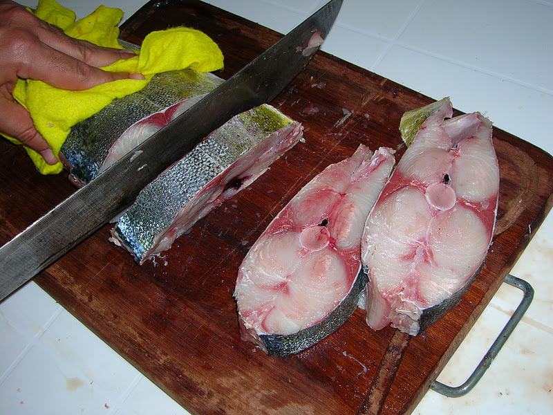
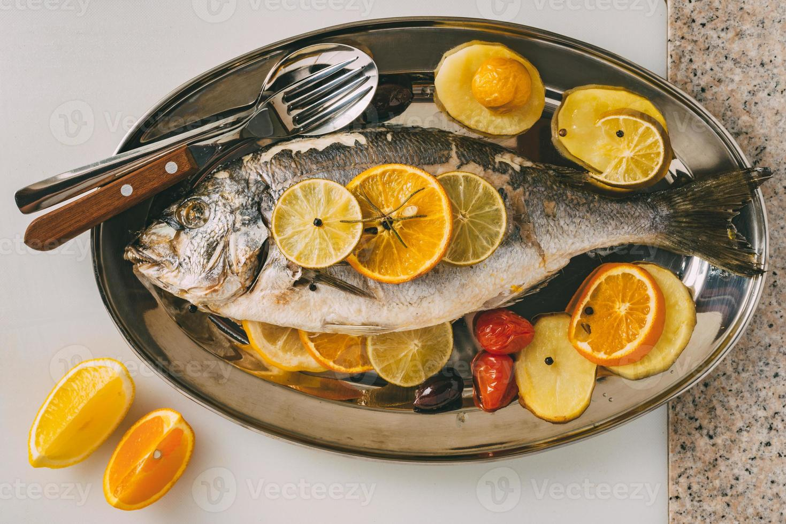
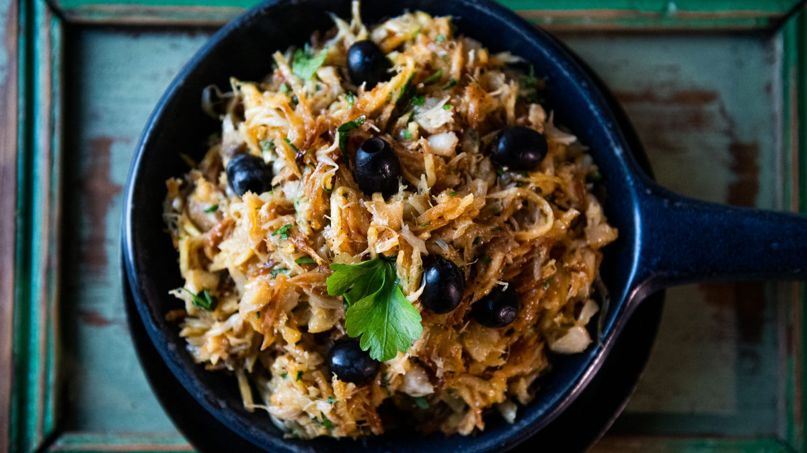
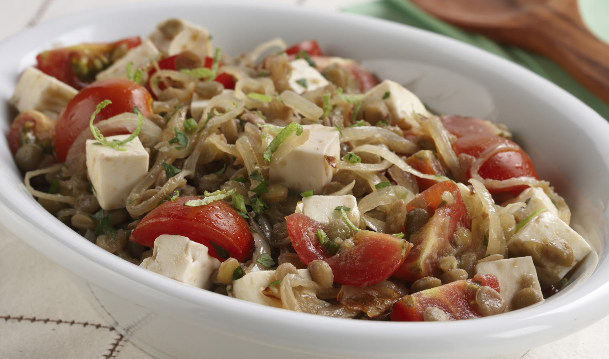
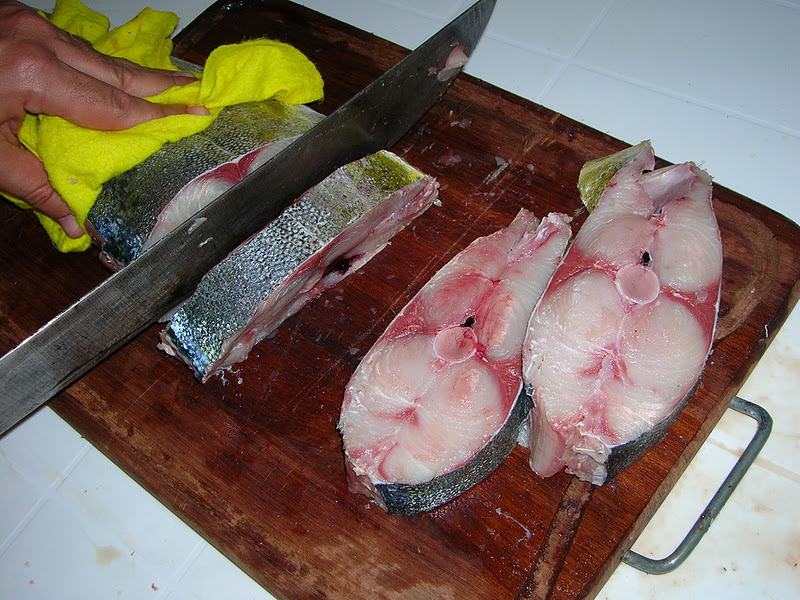

 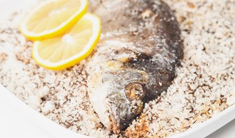
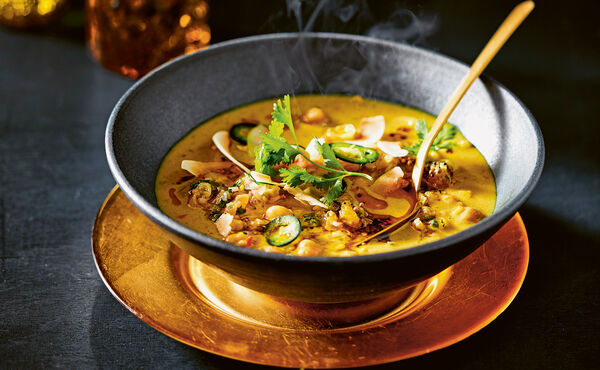
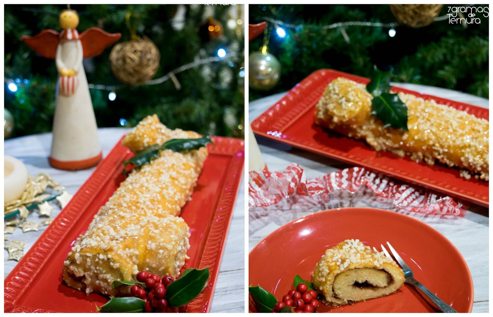
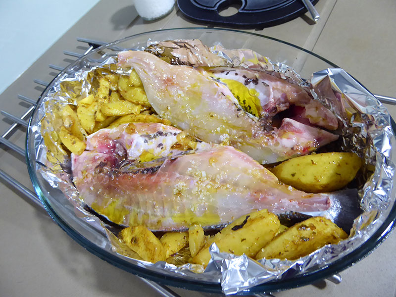
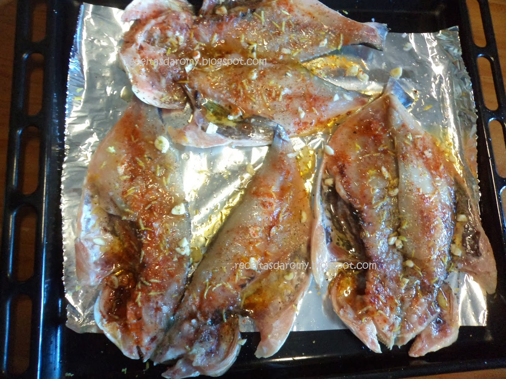
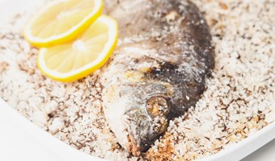
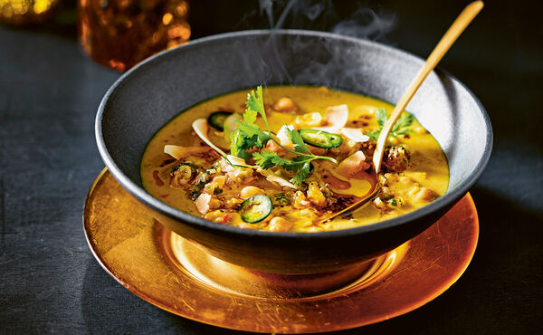
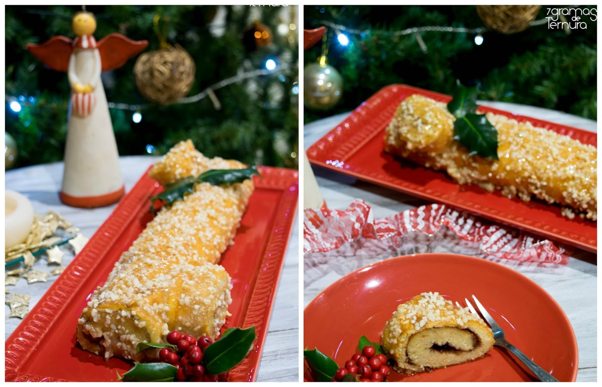
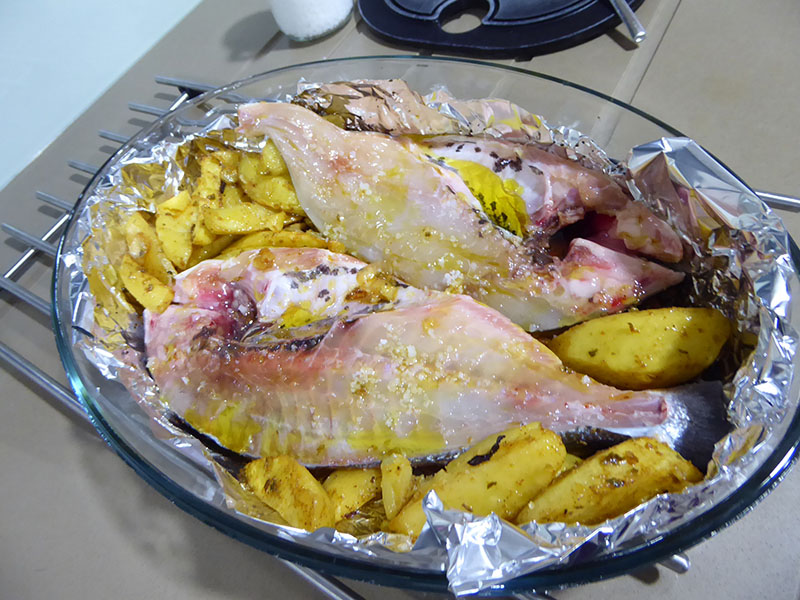
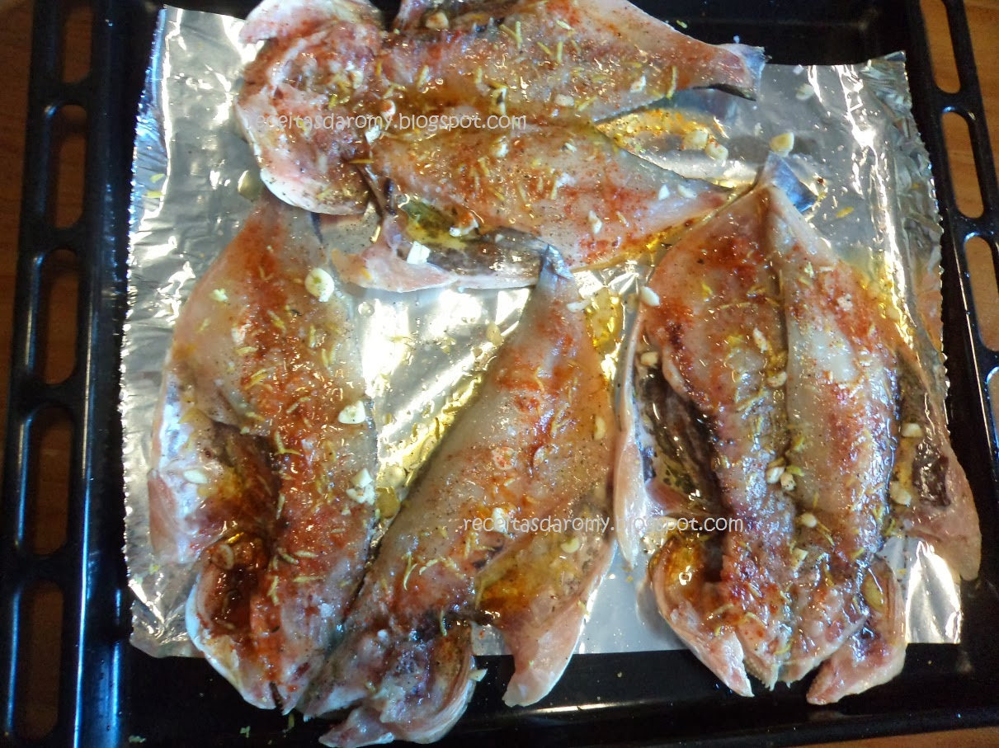


Loja Parceira: